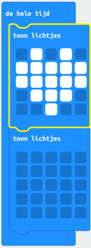

Variabelen, lussen en if...then gebruiken
Hallo daar! Ben jij geïnteresseerd in programmeren? Dat is geweldig! Programmeren is het proces waarbij we een computer of een apparaat zoals de Micro:bit vertellen wat het moet doen. En in deze introductie ga ik je vertellen over een paar belangrijke concepten in het programmeren, namelijk variabelen, lussen en als...dan verklaringen en hoe je ze kunt gebruiken met de Micro:bit, samen met specifieke besturingstoetsen zoals knop A en knop B.
Laten we beginnen met variabelen. Een variabele is een stukje informatie dat we kunnen opslaan en gebruiken in ons programma. Het kan bijvoorbeeld een getal of een woord zijn. Met variabelen kunnen we informatie opslaan en later weer ophalen. Stel je voor dat je een programma maakt om de score bij te houden van een spel dat je speelt op de Micro:bit. Dan kun je een variabele genaamd 'score' maken en deze elke keer dat je een punt scoort met 1 verhogen.
Lussen zijn ook belangrijk bij het programmeren. Een lus is als een herhalingsproces waarbij een stukje code meerdere keren wordt uitgevoerd. Hiermee kunnen we bijvoorbeeld een bepaalde actie meerdere keren herhalen. Stel je voor dat je een programma schrijft om een patroon van lichtjes te maken op de Micro:bit. Dan kun je een lus gebruiken om hetzelfde stukje code te herhalen totdat het patroon is voltooid.
Ten slotte zijn er de als...dan verklaringen. Deze helpen ons om beslissingen te nemen in ons programma. Als bijvoorbeeld de knop A op de Micro:bit wordt ingedrukt, willen we misschien een bepaalde actie uitvoeren, zoals de score verhogen. Dit kan worden gedaan met een als...dan verklaring.
Dus daar heb je het, een korte introductie tot programmeren met de Micro:bit. Met variabelen, lussen en als...dan verklaringen kunnen we complexe programma's schrijven die ons helpen om de Micro:bit te besturen en leuke dingen te maken!
Inhoud
Wat heb je nodig
- BBC Micro:bit – Go:Bundle V2.
- Mico USB aan Standaard USB kabel (is onderdeel van de bovenvermelde kit).
- Laptop met een moderne browser (Chrome, Firefox, Safari) met een standaard USB aansluiting.
Wat ga je doen
We gaan een kloppend hart maken dat niet vanzelf klopt. Maar als we op knop A drukken, gaat het hart kloppen. Als we op knop B drukken, stopt het hart met kloppen. Als we op beide knoppen drukken terwijl het hart al klopt, gaat het langzamer kloppen.
Dus we hebben knop A en knop B om het hart te laten knipperen of stoppen, en als we beide knoppen indrukken, gaat het langzamer kloppen.
Stap 1: Hoe een kloppend hart maken?
Stap 2: Bedenk wat er moet gebeuren als de computer begint. Gebruik hiervoor het blok met de naam "bij opstarten".
Stap 3: Bedenk wat de computer steeds moet blijven doen. Gebruik hiervoor het blok met de naam "de hele tijd".
Stap 1 - Hoe een kloppend hart maken?
We maken een koppend hart door steeds afwisselend de Led-lampjes aan te zetten en dan weer uit te zetten:

Je ziet het hart in de simulator op het scherm kloppen. Je kunt het hart langzamer laten kloppen door de micro:bit steeds een halve seconde te laten wachten. In de basis categorie heb je een blok dat "pauzeer (ms)" heet. "ms" staat voor milliseconden, dus het aantal duizenden van een seconde. Dus een halve seconde is gelijk aan 500 ms.
Sleep het blok "pauzeer (ms)" tussen de twee "toon lichtjes" blokken en stel het in op 500ms door op het keuze pijltje te drukken.

Je ziet het hart langzamer kloppen.
Stap 2 - Algemene strategie
- het hart klopt niet.
- als we op knop A drukken, het hart gaat kloppen.
- als we op knop B drukken, het hart stopt met kloppen,
Hoe realiseer je dat? Je kunt het regelen met een variable die je "iskloppend" noemen.
Als de waarde van "iskloppend" gelijk is aan 0, dan klopt het hart niet een als de waarde gelijk is aan 1 klopt het wel.
We regelen dit in drie stappen:
- Je maakt een varabele "iskloppend", die je plaatst in het blok "bij het ostarten" met de waard 0.
- Als je op knop A drukt, maken de waarde van de variabele "iskloppend" gelijk aan 1.
- Als je op knop B drukt, maken we de waarde van de variable "iskloppend" weer gelijk aan 0.